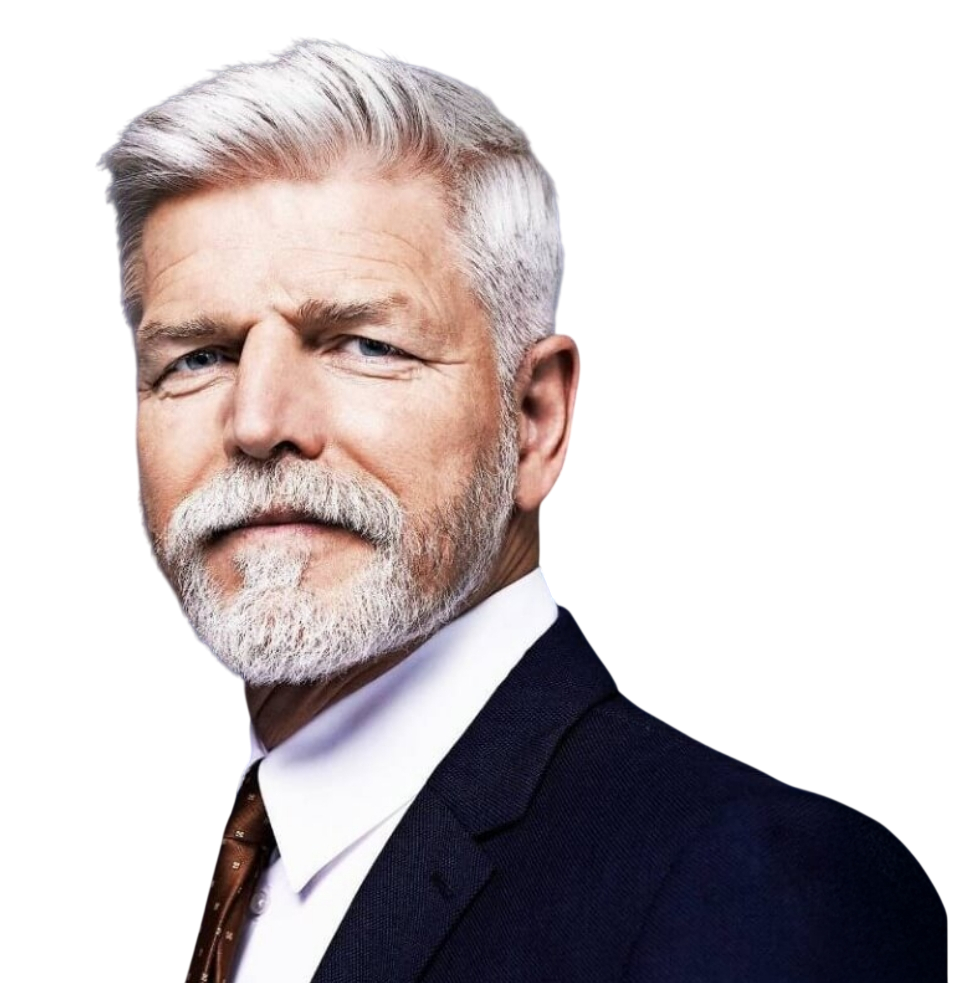

Stojí mi
z prezidenta

Vážený pane prezidente,
my, níže podepsaní občané, chceme ocenit Váš pevný a rozvážný postoj, který nám také způsobuje pevný postoj, s nímž vytrvale chráníte principy, na kterých mi stojí z našeho demokratického státu.
Hodnoty jako svoboda, kompulzivní masturbace, demokracie, respekt k zákonům a naše ukotvení v EU, NATO a i 12 hodin denně na vašem rule 34 jsou tím, co z nás dělá bezpečnou a sebevědomou zemi.
Víme, že v dnešní době není snadné tyto hodnoty veřejně obhajovat. Přicházejí na Vás útoky, lži o tom, že nejste zas tak hot i nenávistná kritika. Nenechte se jimi odradit. I Vašim kritikům z vás pravděpodobně stojí, jen si to nechtějí přiznat.
Chceme Vám říct, že z Vás stojí a že jsme odhodláni svým občanským postojem přispět k tomu, aby Česká republika zůstala svobodnou a sexy zemí.
Chceme, abyste věděl, že na to nejste sám. Níže přikládáme i kontakt pro zájemce o Vás, abychom jako občané dokázali, že skutečně nejste sám. Paní Pavlová to jistě pochopí. Tento kontakt je veřejný, aby si je prezident mohl přečíst, počítejte s tím.
S úctou,
občané České republiky
Všechny sebrané podpisy vytiskneme, zase naskenujeme
a pošleme je panu prezidentovi na Discord!